How to do TI analysis
Today we are going to walk you through some analysis steps for TI.
The following steps we will walk through
Loading data
Standard quality control
PCA embedding
diffusion map pseudotime
various plots
id dynamically expresssed genes
cell typing
[1]:
import pandas as pd
import matplotlib.pyplot as plt
import seaborn as sns
import scanpy as sc
import scipy as sp
import numpy as np
import warnings
sc.settings.set_figure_params(dpi=80)
warnings.filterwarnings('ignore')
[3]:
adata = sc.read_h5ad("/Users/patrickcahan/Dropbox (Personal)/data/cscb/2022/d4/cscb_2022_d4_raw.h5ad")
adata.obs['sampleName'] = "mEB_day4"
adata
[3]:
AnnData object with n_obs × n_vars = 5405 × 27998
obs: 'sampleName', 'n_genes_by_counts', 'total_counts', 'total_counts_ribo', 'pct_counts_ribo', 'total_counts_mt', 'pct_counts_mt'
var: 'gene_ids', 'mt', 'ribo', 'n_cells_by_counts', 'mean_counts', 'pct_dropout_by_counts', 'total_counts'
[4]:
sc.pl.highest_expr_genes(adata, n_top=20, )
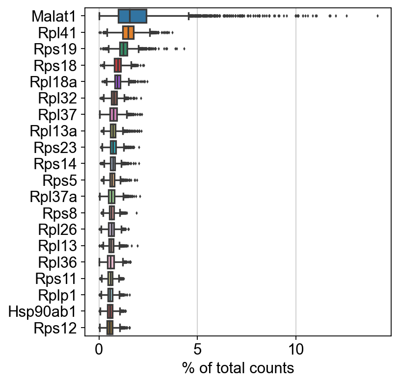
[5]:
adata.var['mt']= adata.var_names.str.startswith(("mt-"))
adata.var['ribo'] = adata.var_names.str.startswith(("Rps","Rpl"))
sc.pp.calculate_qc_metrics(adata, qc_vars=['ribo', 'mt'], percent_top=None, log1p=False, inplace=True)
[6]:
axs = sc.pl.violin(adata, ['n_genes_by_counts', 'total_counts', 'pct_counts_mt', 'pct_counts_ribo'],jitter=0.4, multi_panel=True)
... storing 'sampleName' as categorical
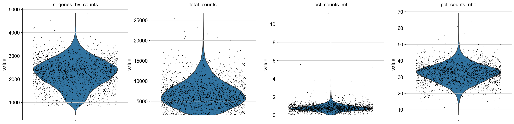
[7]:
sc.pl.scatter(adata, x='total_counts', y='n_genes_by_counts')
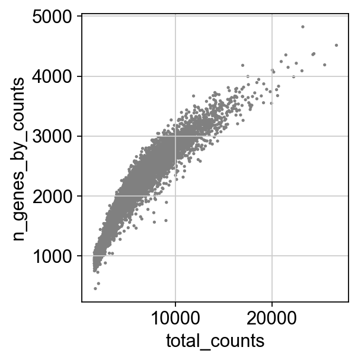
[8]:
print("Number of cells: ",adata.n_obs)
# figure out the total counts == 95 percentile
thresh = np.percentile(adata.obs['total_counts'],95)
print("95th percentile: ",thresh)
adata = adata[adata.obs['total_counts'] < thresh, :]
print("Number of cells: ",adata.n_obs)
Number of cells: 5405
95th percentile: 12928.400000000001
Number of cells: 5134
[9]:
mito_genes = adata.var_names.str.startswith('mt-')
ribo_genes = adata.var_names.str.startswith(("Rpl","Rps"))
malat_gene = adata.var_names.str.startswith("Malat1")
remove = np.add(mito_genes, ribo_genes)
remove = np.add(remove, malat_gene)
keep = np.invert(remove)
print(len(keep) - np.count_nonzero(keep))
adata = adata[:,keep].copy()
print("Number of genes: ",adata.n_vars)
127
Number of genes: 27871
[10]:
adM1Norm = adata.copy()
sc.pp.filter_genes(adM1Norm, min_cells=5)
sc.pp.normalize_per_cell(adM1Norm, counts_per_cell_after=1e4)
sc.pp.log1p(adM1Norm)
sc.pp.highly_variable_genes(adM1Norm, min_mean=0.0125, max_mean=5, min_disp=0.25)
[11]:
sc.pl.highly_variable_genes(adM1Norm)
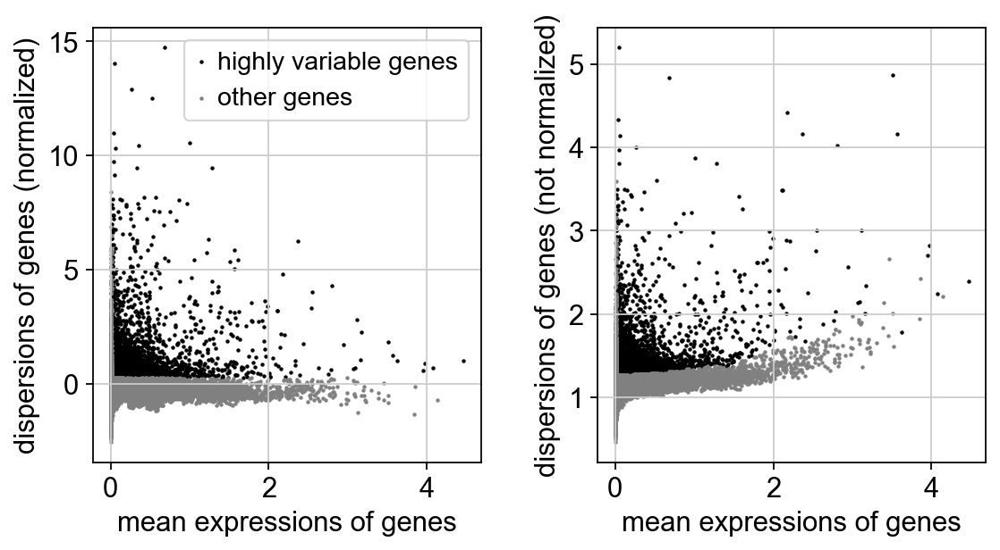
[12]:
adM1Norm.raw = adM1Norm
sc.pp.scale(adM1Norm, max_value=10)
sc.tl.pca(adM1Norm, n_comps=100)
[13]:
sc.set_figure_params(figsize="10, 4")
sc.pl.pca_variance_ratio(adM1Norm, 100)
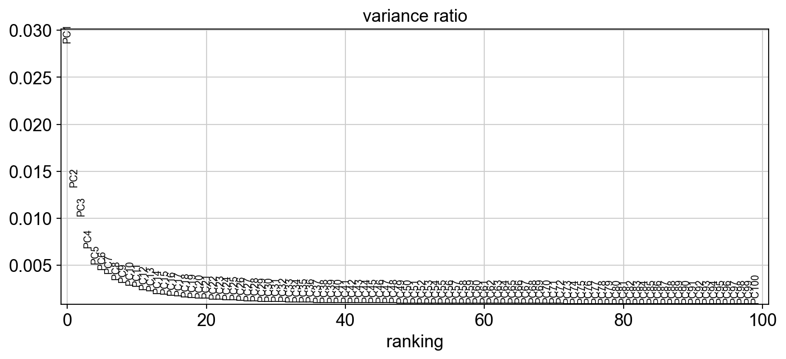
[14]:
npcs = 15
nknns = 15
sc.pp.neighbors(adM1Norm, n_neighbors=nknns, n_pcs=npcs)
sc.tl.leiden(adM1Norm,.25)
OMP: Info #271: omp_set_nested routine deprecated, please use omp_set_max_active_levels instead.
[15]:
fig, axs = plt.subplots(1,2, figsize=(10,5), constrained_layout=True)
sc.pl.pca(adM1Norm, color=["leiden"], alpha=.7, s=20, components="1,2",legend_loc='on data', ax=axs[0], show=False)
sc.pl.pca(adM1Norm, color=["leiden"], alpha=.7, s=20, components="1,3",legend_loc='on data', ax=axs[1], show=False)
[15]:
<AxesSubplot:title={'center':'leiden'}, xlabel='PC1', ylabel='PC3'>
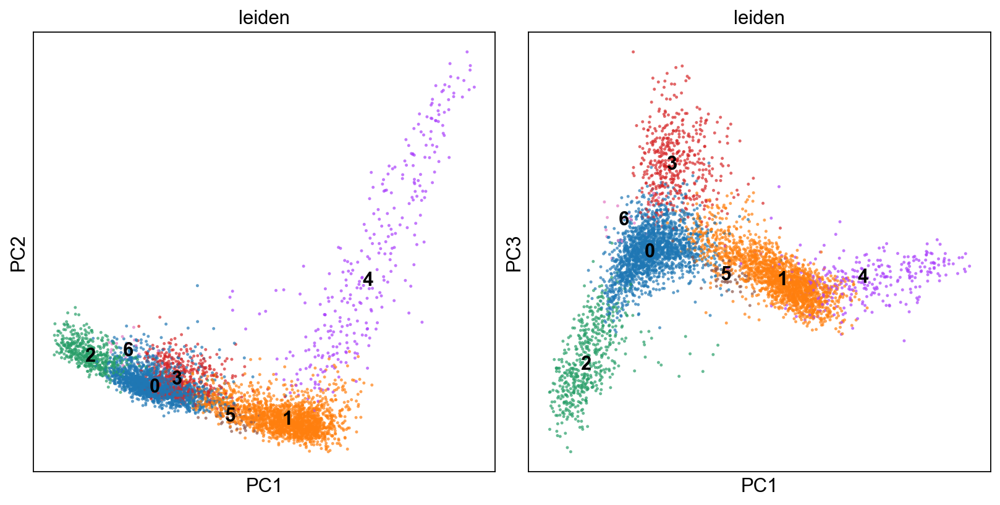
[16]:
sc.tl.rank_genes_groups(adM1Norm, 'leiden')
WARNING: Default of the method has been changed to 't-test' from 't-test_overestim_var'
[18]:
sc.pl.rank_genes_groups_dotplot(adM1Norm, n_genes=10, groupby='leiden', use_raw=False, dendrogram=False)
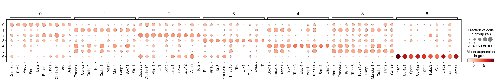
[64]:
sc.pl.rank_genes_groups_dotplot(adM1Norm, n_genes=25, groupby='leiden', groups=["2"],use_raw=False, dendrogram=False)
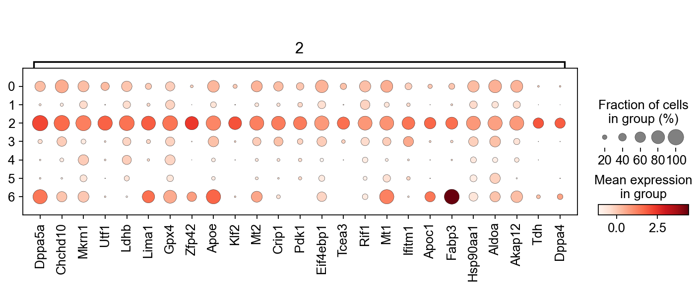
[65]:
adM1X = adM1Norm[adM1Norm.obs['leiden'] != "6"].copy()
adM1X = adM1X[adM1X.obs['leiden'] != "5"].copy()
adM1X
[65]:
AnnData object with n_obs × n_vars = 5060 × 15567
obs: 'sampleName', 'n_genes_by_counts', 'total_counts', 'total_counts_ribo', 'pct_counts_ribo', 'total_counts_mt', 'pct_counts_mt', 'n_counts', 'leiden'
var: 'gene_ids', 'mt', 'ribo', 'n_cells_by_counts', 'mean_counts', 'pct_dropout_by_counts', 'total_counts', 'n_cells', 'highly_variable', 'means', 'dispersions', 'dispersions_norm', 'mean', 'std'
uns: 'log1p', 'hvg', 'pca', 'neighbors', 'leiden', 'leiden_colors', 'rank_genes_groups'
obsm: 'X_pca'
varm: 'PCs'
obsp: 'distances', 'connectivities'
[66]:
sc.tl.rank_genes_groups(adM1X, 'leiden')
sc.pl.rank_genes_groups_dotplot(adM1X, n_genes=8, groupby='leiden', use_raw=False, dendrogram=False)
WARNING: Default of the method has been changed to 't-test' from 't-test_overestim_var'
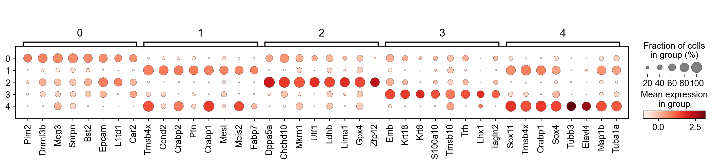
Based on this, I think the following cluster annotation makes sense:
Primed
Ect
Naive
PrimStr
NeurEct
Let’s rename the clusters
[67]:
new_sc_names = ["Primed","Ect", "Naive", "PrimStr", "NeurEct"]
adM1X.rename_categories('leiden', new_sc_names)
[69]:
sc.tl.diffmap(adM1X)
[70]:
sc.pl.diffmap(adM1X, color="leiden")
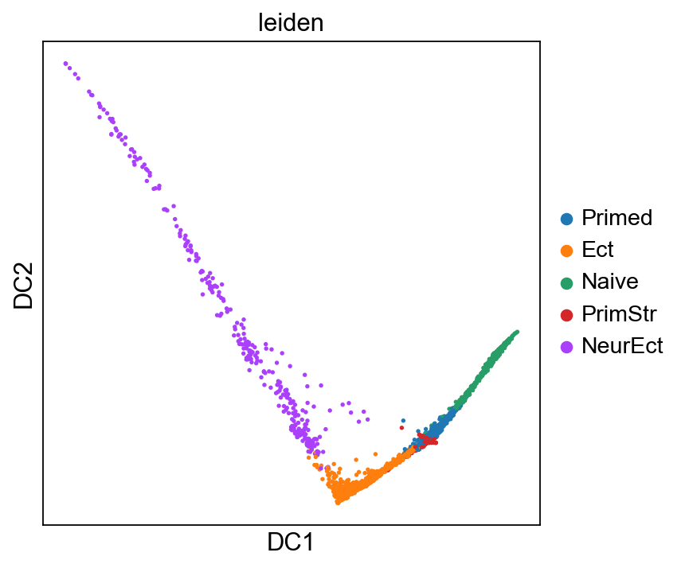
[71]:
sc.pl.diffmap(adM1X, color="leiden", components=["1,3"])
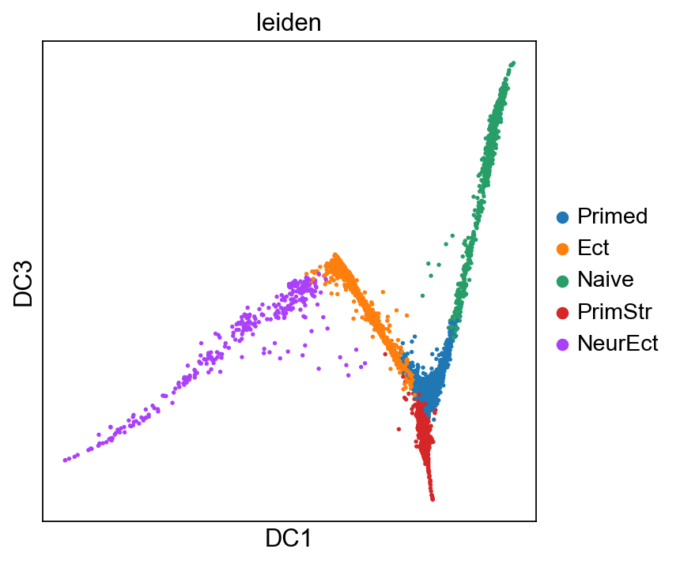
[24]:
sc.set_figure_params(figsize="10, 8")
sc.pl.diffmap(adM1X, color="leiden", components=("1,3"), legend_loc='on data')
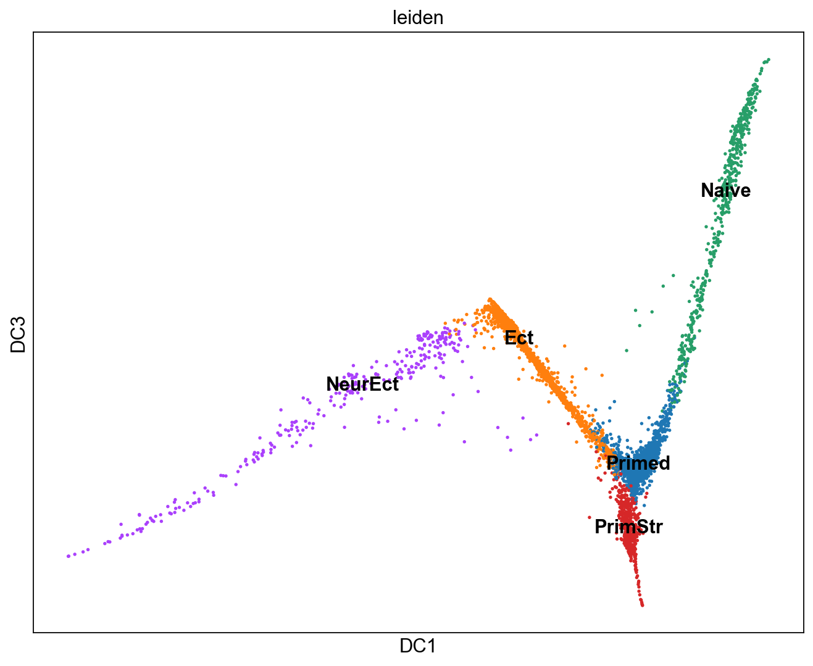
[74]:
adM1X.uns['iroot'] = np.flatnonzero(adM1X.obs['leiden'] == 'Naive')[0]
[78]:
adM1X
[78]:
AnnData object with n_obs × n_vars = 5060 × 15567
obs: 'sampleName', 'n_genes_by_counts', 'total_counts', 'total_counts_ribo', 'pct_counts_ribo', 'total_counts_mt', 'pct_counts_mt', 'n_counts', 'leiden', 'dpt_pseudotime', 'dpt_groups', 'dpt_order', 'dpt_order_indices'
var: 'gene_ids', 'mt', 'ribo', 'n_cells_by_counts', 'mean_counts', 'pct_dropout_by_counts', 'total_counts', 'n_cells', 'highly_variable', 'means', 'dispersions', 'dispersions_norm', 'mean', 'std'
uns: 'log1p', 'hvg', 'pca', 'neighbors', 'leiden', 'leiden_colors', 'rank_genes_groups', 'diffmap_evals', 'iroot', 'dpt_changepoints', 'dpt_grouptips'
obsm: 'X_pca', 'X_diffmap'
varm: 'PCs'
obsp: 'distances', 'connectivities'
[75]:
sc.tl.dpt(adM1X, n_branchings=1)
[76]:
sc.pl.diffmap(adM1X, color="dpt_pseudotime", components=("1,3"), legend_loc='on data')
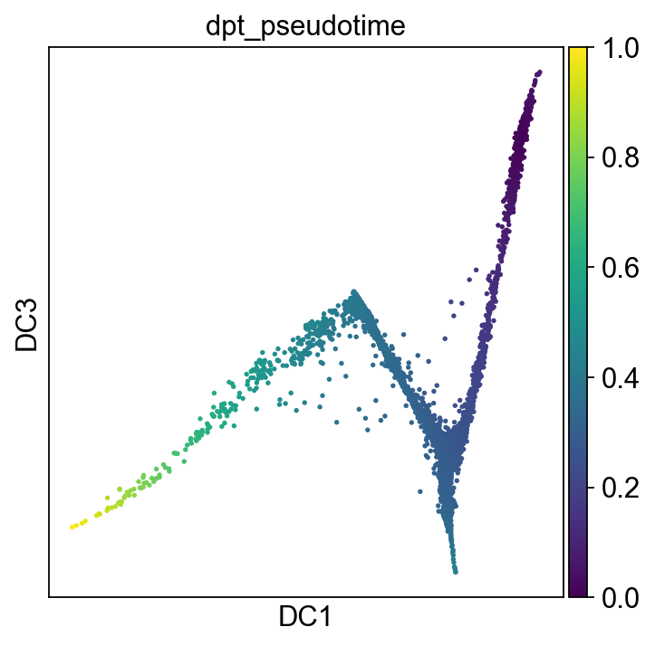
[79]:
sc.pl.violin(adM1X, "dpt_pseudotime", groupby="leiden")
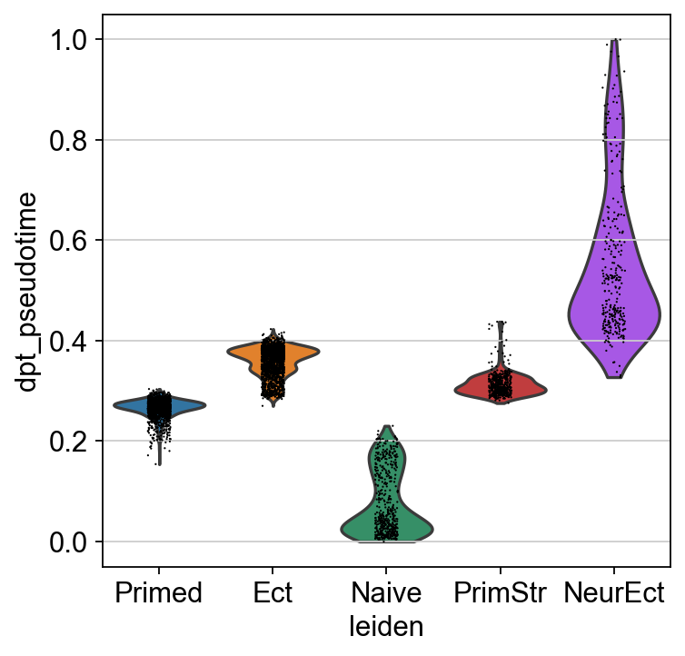
[80]:
adM1X.obs['leiden'].cat.categories
[80]:
Index(['Primed', 'Ect', 'Naive', 'PrimStr', 'NeurEct'], dtype='object')
[81]:
vorder = adM1X.obs['leiden'].cat.categories[[2,0,3,1,4]]
sc.pl.violin(adM1X, "dpt_pseudotime", groupby="leiden", order=vorder)
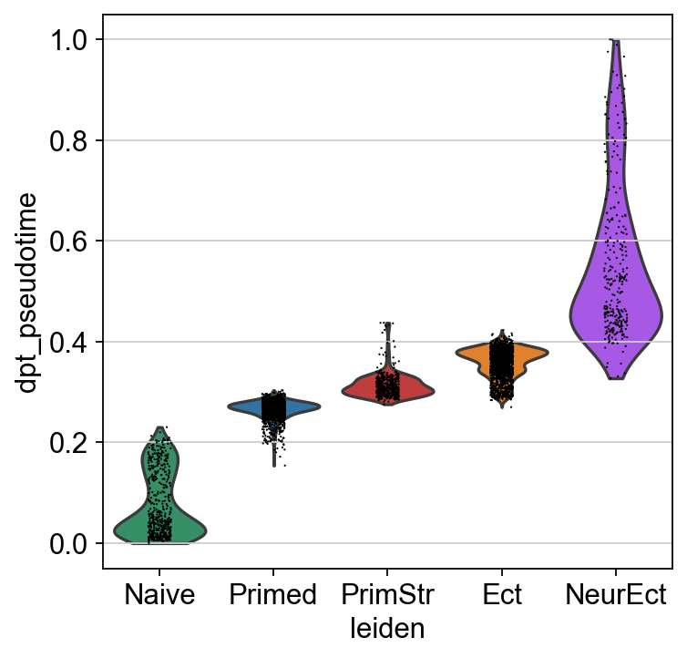
[82]:
fig, axs = plt.subplots(1,2, figsize=(10,5), constrained_layout=True)
sc.pl.pca(adM1X, color=["dpt_pseudotime"], alpha=.9, s=20, components="1,2",legend_loc='on data', ax=axs[0], show=False)
sc.pl.pca(adM1X, color=["dpt_pseudotime"], alpha=.9, s=20, components="1,3",legend_loc='on data', ax=axs[1], show=False)
[82]:
<AxesSubplot:title={'center':'dpt_pseudotime'}, xlabel='PC1', ylabel='PC3'>
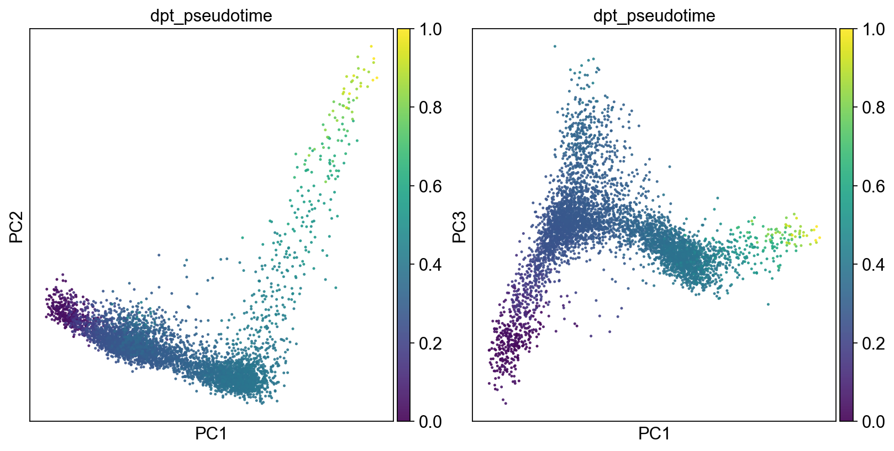
[83]:
sc.pl.pca(adM1X, color=["leiden"], alpha=.9, s=25, projection='3d')
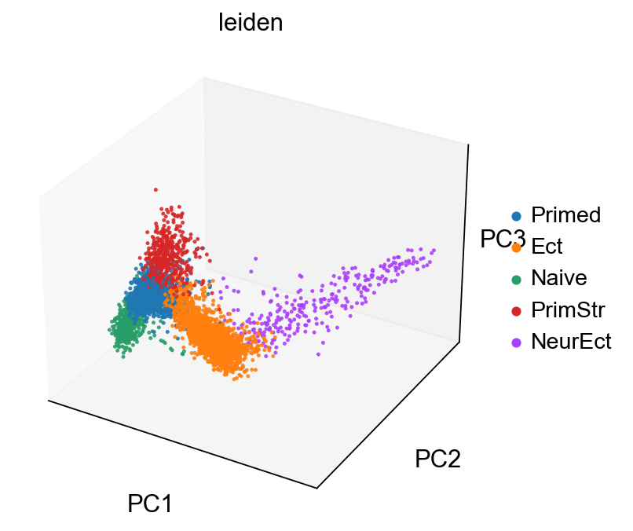
[84]:
sc.tl.paga(adM1X, groups='leiden')
[85]:
sc.set_figure_params(figsize="10, 8")
sc.pl.paga(adM1X, color=['leiden'])
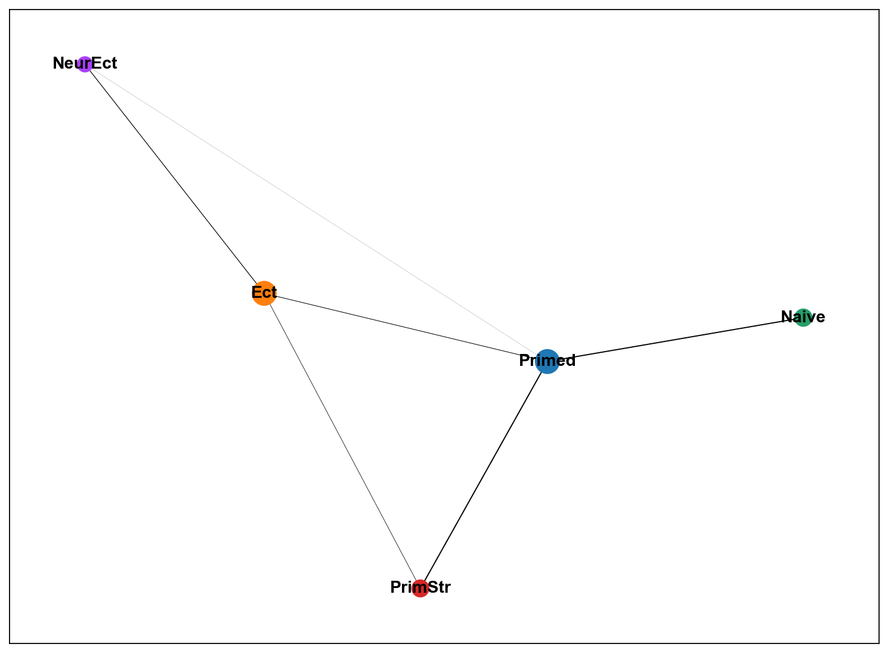
[86]:
sc.set_figure_params(figsize="5, 5")
sc.pl.paga(adM1X,color=['leiden'], layout="rt", root=2, single_component=True)
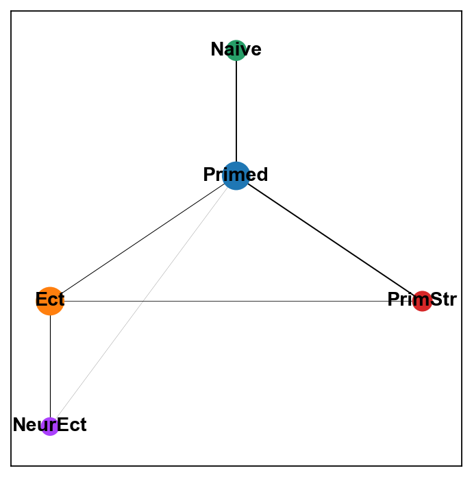
[87]:
sc.pl.paga_path(adM1X, ["Naive", "Primed", "PrimStr"], keys=["Zfp42","Dnmt3b", "T"])
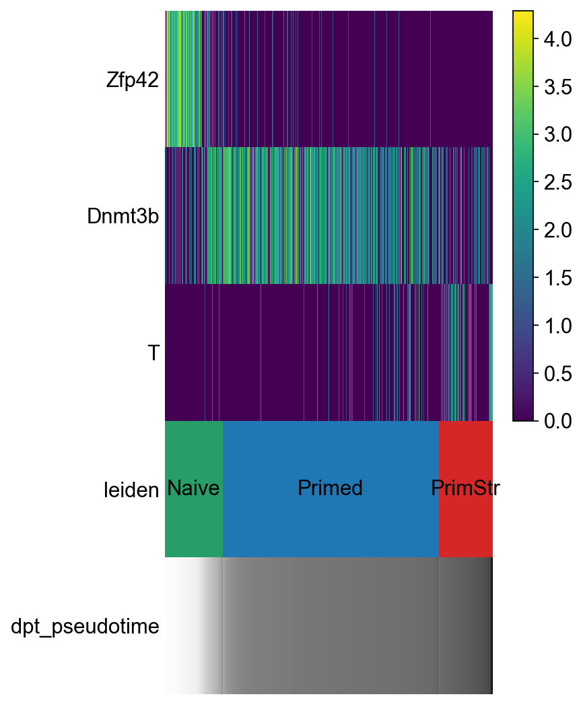
[88]:
sc.pl.paga_path(adM1X, ["Naive", "Primed", "Ect", "NeurEct"], keys=["Zfp42","Dnmt3b", "Sox1", "Tubb3"])
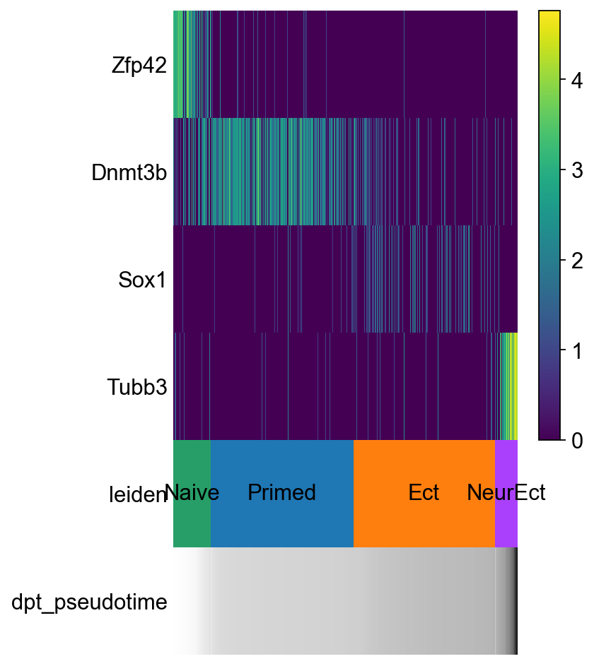
How to find other genes dynamically expressed???
[89]:
from scipy import stats
from pygam import GAM, s,l
[90]:
def gamFit(expMat,genes,celltime):
genes2=(set(genes) & set(expMat.index))
def abcd(input_data):
z=pd.DataFrame()
z["z"]=input_data.values
z["t"]=celltime.values
z.index=expMat.columns
X=celltime.values.reshape((celltime.shape[0],1))
y=z["z"].values
gam=GAM(l(0)).fit(X,y)
p=gam.statistics_['p_values'][0]
return p
ans=expMat.loc[genes2][celltime.index].apply(abcd,axis=1)
return ans
[91]:
def findDynGenes(adata, group_column="leiden", pseudotime_column="dpt_pseudotime"):
sampTab=pd.DataFrame(adata.obs)
#sampTab.rename(columns={'psuedotime':'pseudotime'}, inplace=True)
genes=adata.var.index
expDat=pd.DataFrame(adata.X).T
expDat.columns=sampTab.index
expDat.index=genes
expDat=expDat.loc[expDat.sum(axis=1)!=0]
sampTab["dpt_groups"]=sampTab[group_column]
sampTab["pseudotime"]=sampTab[pseudotime_column]
sampTab["cell_name"]=sampTab.index
path=np.unique(sampTab["dpt_groups"])
ids=[]
for grp in path:
a=sampTab.loc[sampTab["dpt_groups"]==grp]
b=a["cell_name"]
ids=np.append(ids,b)
sampTab=sampTab.loc[ids,:]
#print(sampTab)
expDat=expDat[ids]
t1=sampTab["pseudotime"]
t1C=t1[ids]
print("starting gamma...")
#print(expDat[t1C.index])
gpChr=pd.DataFrame(gamFit(expDat[t1C.index],expDat.index,t1))
gpChr.columns=["dynamic_pval"]
cells=pd.DataFrame()
cells["cell_name"]=pd.DataFrame(t1).index
cells["pseudotime"]=t1.values
cells["group"]=sampTab["dpt_groups"].values
cells.index=cells["cell_name"]
cells=cells.sort_values(by="pseudotime")
#ans=list([gpChr,cells])
adata.uns["genes"]=gpChr
adata.uns["cells"]=cells
print("Done. Dynamic pvalues stored in .uns['genes']. Ordered cells and pseudotime stored in .uns['cells'].")
return adata
[92]:
adM1X.var
[92]:
| gene_ids | mt | ribo | n_cells_by_counts | mean_counts | pct_dropout_by_counts | total_counts | n_cells | highly_variable | means | dispersions | dispersions_norm | mean | std | |
|---|---|---|---|---|---|---|---|---|---|---|---|---|---|---|
| Xkr4 | ENSMUSG00000051951 | False | False | 37 | 0.007031 | 99.315449 | 38.0 | 36 | False | 0.016082 | 0.963253 | -0.801470 | 0.008202 | 0.099437 |
| Sox17 | ENSMUSG00000025902 | False | False | 214 | 0.121369 | 96.040703 | 656.0 | 200 | True | 0.244202 | 2.411042 | 5.504012 | 0.073287 | 0.385733 |
| Mrpl15 | ENSMUSG00000033845 | False | False | 3083 | 1.093617 | 42.960222 | 5911.0 | 2830 | False | 1.180537 | 1.363256 | 0.195734 | 0.840333 | 0.822898 |
| Lypla1 | ENSMUSG00000025903 | False | False | 1300 | 0.289732 | 75.948196 | 1566.0 | 1183 | False | 0.525076 | 1.226516 | -0.061477 | 0.302540 | 0.578844 |
| Tcea1 | ENSMUSG00000033813 | False | False | 2025 | 0.507678 | 62.534690 | 2744.0 | 1861 | False | 0.782626 | 1.229165 | -0.092551 | 0.496253 | 0.697680 |
| ... | ... | ... | ... | ... | ... | ... | ... | ... | ... | ... | ... | ... | ... | ... |
| Vamp7 | ENSMUSG00000051412 | False | False | 810 | 0.168178 | 85.013876 | 909.0 | 732 | True | 0.342350 | 1.298021 | 0.319167 | 0.181930 | 0.466421 |
| Spry3 | ENSMUSG00000061654 | False | False | 5 | 0.000925 | 99.907493 | 5.0 | 5 | False | 0.002563 | 1.157727 | -0.120449 | 0.001203 | 0.039912 |
| PISD | ENSMUSG00000095041 | False | False | 2648 | 0.801295 | 51.008326 | 4331.0 | 2500 | True | 1.132169 | 1.546269 | 0.887386 | 0.749295 | 0.840005 |
| DHRSX | ENSMUSG00000063897 | False | False | 363 | 0.071230 | 93.283996 | 385.0 | 332 | False | 0.147751 | 1.128050 | -0.224374 | 0.077331 | 0.302422 |
| CAAA01147332.1 | ENSMUSG00000095742 | False | False | 13 | 0.002405 | 99.759482 | 13.0 | 10 | False | 0.006232 | 1.560306 | 1.289330 | 0.002586 | 0.061683 |
15567 rows × 14 columns
[93]:
ad2 = adM1X[:,adM1X.var["highly_variable"] ].copy()
[94]:
ad2
[94]:
AnnData object with n_obs × n_vars = 5060 × 2808
obs: 'sampleName', 'n_genes_by_counts', 'total_counts', 'total_counts_ribo', 'pct_counts_ribo', 'total_counts_mt', 'pct_counts_mt', 'n_counts', 'leiden', 'dpt_pseudotime', 'dpt_groups', 'dpt_order', 'dpt_order_indices'
var: 'gene_ids', 'mt', 'ribo', 'n_cells_by_counts', 'mean_counts', 'pct_dropout_by_counts', 'total_counts', 'n_cells', 'highly_variable', 'means', 'dispersions', 'dispersions_norm', 'mean', 'std'
uns: 'log1p', 'hvg', 'pca', 'neighbors', 'leiden', 'leiden_colors', 'rank_genes_groups', 'diffmap_evals', 'iroot', 'dpt_changepoints', 'dpt_grouptips', 'paga', 'leiden_sizes'
obsm: 'X_pca', 'X_diffmap'
varm: 'PCs'
obsp: 'distances', 'connectivities'
[95]:
ad2 = findDynGenes(ad2, group_column="leiden",pseudotime_column="dpt_pseudotime")
starting gamma...
Done. Dynamic pvalues stored in .uns['genes']. Ordered cells and pseudotime stored in .uns['cells'].
[96]:
ad2
[96]:
AnnData object with n_obs × n_vars = 5060 × 2808
obs: 'sampleName', 'n_genes_by_counts', 'total_counts', 'total_counts_ribo', 'pct_counts_ribo', 'total_counts_mt', 'pct_counts_mt', 'n_counts', 'leiden', 'dpt_pseudotime', 'dpt_groups', 'dpt_order', 'dpt_order_indices', 'pseudotime', 'cell_name'
var: 'gene_ids', 'mt', 'ribo', 'n_cells_by_counts', 'mean_counts', 'pct_dropout_by_counts', 'total_counts', 'n_cells', 'highly_variable', 'means', 'dispersions', 'dispersions_norm', 'mean', 'std'
uns: 'log1p', 'hvg', 'pca', 'neighbors', 'leiden', 'leiden_colors', 'rank_genes_groups', 'diffmap_evals', 'iroot', 'dpt_changepoints', 'dpt_grouptips', 'paga', 'leiden_sizes', 'genes', 'cells'
obsm: 'X_pca', 'X_diffmap'
varm: 'PCs'
obsp: 'distances', 'connectivities'
[97]:
ad2.uns["genes"]
[97]:
| dynamic_pval | |
|---|---|
| App | 1.110223e-16 |
| Hoxb9 | 9.244451e-01 |
| Fermt1 | 1.341522e-06 |
| Psma1 | 6.203960e-01 |
| Ly6e | 2.817916e-09 |
| ... | ... |
| T | 6.968422e-01 |
| Upf3b | 1.285656e-03 |
| Tmem108 | 9.715784e-12 |
| Flrt1 | 6.068190e-11 |
| Slc48a1 | 1.462900e-01 |
2808 rows × 1 columns
[98]:
ad2.uns["genes"].sort_values(by="dynamic_pval")
[98]:
| dynamic_pval | |
|---|---|
| App | 1.110223e-16 |
| Slc2a1 | 1.110223e-16 |
| Npr2 | 1.110223e-16 |
| Celf3 | 1.110223e-16 |
| Serp2 | 1.110223e-16 |
| ... | ... |
| Ypel5 | 9.924643e-01 |
| Styx | 9.932226e-01 |
| Gpc3 | 9.944588e-01 |
| Smg7 | 9.964382e-01 |
| Zfp235 | 9.996370e-01 |
2808 rows × 1 columns
[99]:
ad2.uns["genes"].plot.hist()
[99]:
<AxesSubplot:ylabel='Frequency'>
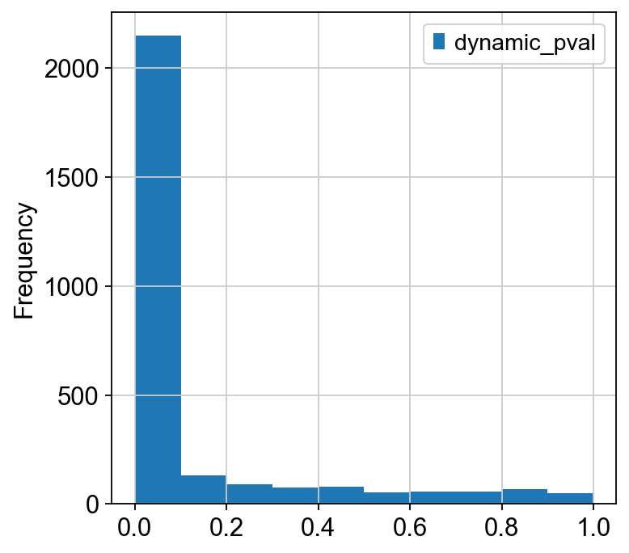
[50]:
ad2.uns["cells"]
[50]:
| cell_name | pseudotime | group | |
|---|---|---|---|
| cell_name | |||
| AAAGACGATGATGC-1 | AAAGACGATGATGC-1 | 0.000000 | Naive |
| CCAGGTCTTTCCAT-1 | CCAGGTCTTTCCAT-1 | 0.003910 | Naive |
| GCTACAGAAGAAGT-1 | GCTACAGAAGAAGT-1 | 0.003936 | Naive |
| GAGGTTACCGACTA-1 | GAGGTTACCGACTA-1 | 0.004223 | Naive |
| GTTAAATGGTCTAG-1 | GTTAAATGGTCTAG-1 | 0.004238 | Naive |
| ... | ... | ... | ... |
| CAATCGGATGGTCA-1 | CAATCGGATGGTCA-1 | 0.965796 | NeurEct |
| AGGATGCTTCTGGA-1 | AGGATGCTTCTGGA-1 | 0.975470 | NeurEct |
| GATGCATGAACAGA-1 | GATGCATGAACAGA-1 | 0.989113 | NeurEct |
| GATTCTTGAAGGTA-1 | GATTCTTGAAGGTA-1 | 0.999247 | NeurEct |
| GGATGTACCTGTAG-1 | GGATGTACCTGTAG-1 | 1.000000 | NeurEct |
5060 rows × 3 columns
[100]:
dynGenes = ad2.uns["genes"]
dynGenes = dynGenes[dynGenes.values < 1e-15]
#dynGenes.index.values.tolist()
[101]:
# dynGenes[0:4]
sc.pl.paga_path(ad2, ["Naive", "Primed", "PrimStr"], keys=dynGenes.index.values.tolist()[0:100], use_raw=False, normalize_to_zero_one=True)
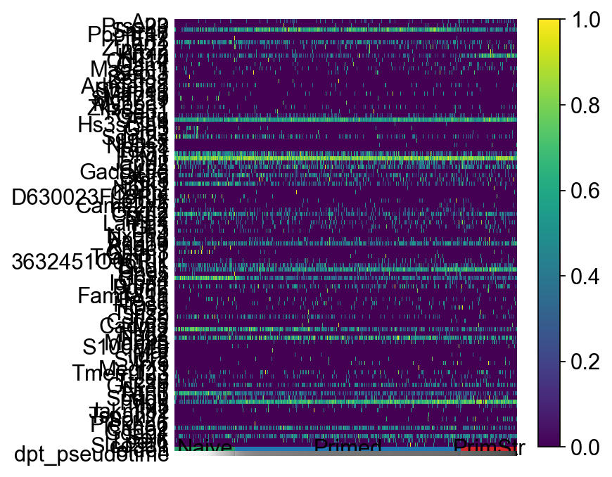
[102]:
ad2 = ad2[ ad2.uns["cells"].index ].copy()
[54]:
ad2
[54]:
AnnData object with n_obs × n_vars = 5060 × 2808
obs: 'sampleName', 'n_genes_by_counts', 'total_counts', 'total_counts_ribo', 'pct_counts_ribo', 'total_counts_mt', 'pct_counts_mt', 'n_counts', 'leiden', 'dpt_pseudotime', 'dpt_groups', 'dpt_order', 'dpt_order_indices', 'pseudotime', 'cell_name'
var: 'gene_ids', 'mt', 'ribo', 'n_cells_by_counts', 'mean_counts', 'pct_dropout_by_counts', 'total_counts', 'n_cells', 'highly_variable', 'means', 'dispersions', 'dispersions_norm', 'mean', 'std'
uns: 'log1p', 'hvg', 'pca', 'neighbors', 'leiden', 'leiden_colors', 'rank_genes_groups', 'diffmap_evals', 'iroot', 'dpt_changepoints', 'dpt_grouptips', 'paga', 'leiden_sizes', 'genes', 'cells'
obsm: 'X_pca', 'X_diffmap'
varm: 'PCs'
obsp: 'distances', 'connectivities'
[103]:
expDat = ad2[:,dynGenes.index].X.T
[104]:
sns.clustermap(expDat, col_cluster=False, method="ward", standard_scale=0)
[104]:
<seaborn.matrix.ClusterGrid at 0x7fda10b27160>
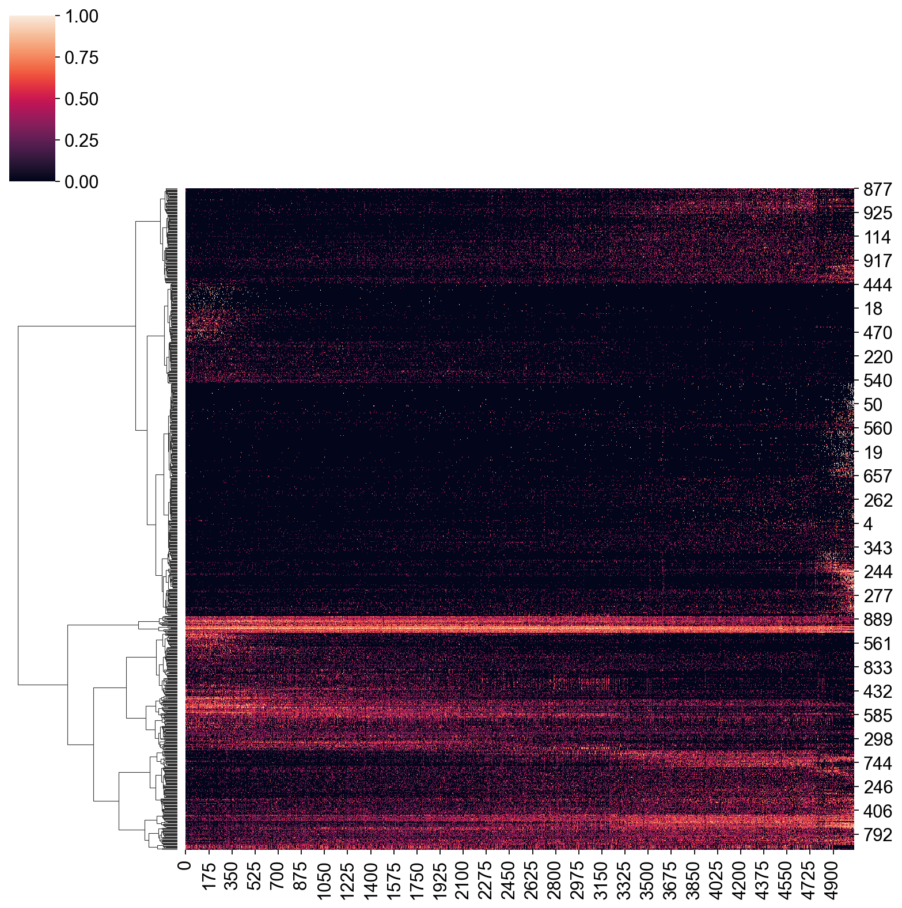
[105]:
expDat = ad2[:,dynGenes[1:100].index].X.T
sns.clustermap(expDat, col_cluster=False, method="ward", standard_scale=0)
[105]:
<seaborn.matrix.ClusterGrid at 0x7fda9537e2b0>
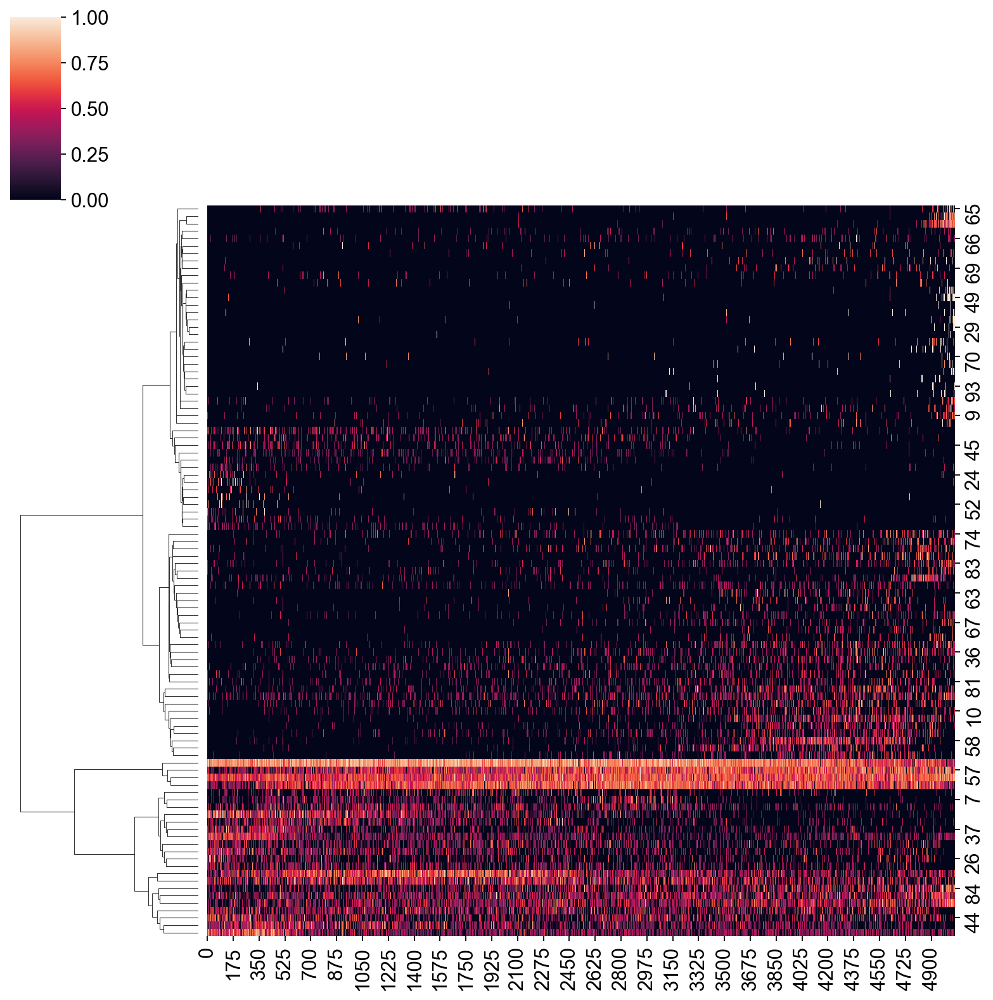
[58]:
sc.pl.paga_path(adM1X, ["Naive", "Primed", "PrimStr"], keys=["Zfp42","Nanog", "Pou5f1", "Esrrb", "Dnmt3b", "T"])
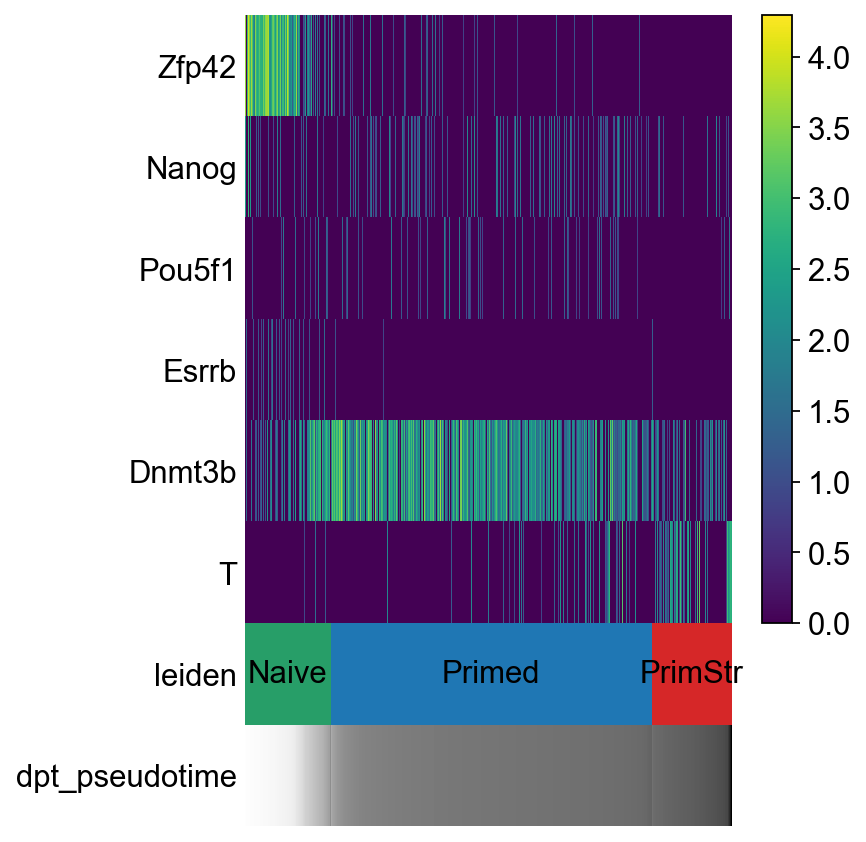
[106]:
import pySingleCellNet as pySCN
[107]:
# load embryo classifier
from joblib import dump, load
tspRF_PRC = load("/Users/patrickcahan/Dropbox (Personal)/data/cscb/2022/TI/classifier/tspRF_Embryo_PRC_genes_113021.joblib") # warning
cgenesA_PRC = load("/Users/patrickcahan/Dropbox (Personal)/data/cscb/2022/TI/classifier/cgenesA_Embryo_PRC_genes_113021.joblib")
xpairs_PRC = load("/Users/patrickcahan/Dropbox (Personal)/data/cscb/2022/TI/classifier/xpairs_Embryo_PRC_genes_113021.joblib")
[108]:
adata.obs['leiden'] = adM1Norm.obs['leiden'].copy()
[109]:
adSCN = pySCN.scn_classify(adata, cgenesA_PRC, xpairs_PRC, tspRF_PRC, nrand = 0)
[110]:
ax = sc.pl.heatmap(adSCN, adSCN.var_names.values, groupby='leiden', cmap='viridis', dendrogram=False, swap_axes=True)
... storing 'SCN_class' as categorical
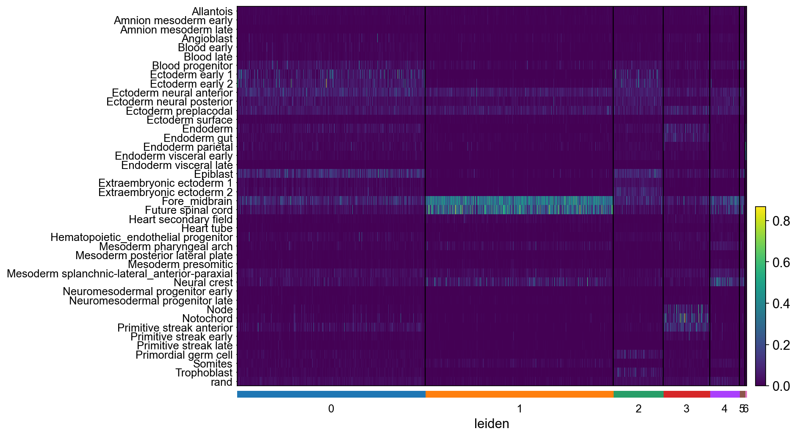
[ ]: